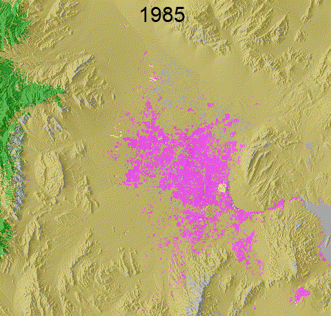

LCMS
What: Annual vegetation cover change, land cover, and land use data
When: 1985 to present
Where: Across conterminous U.S., SE Alaska, Puerto Rico, U.S. Virgin Islands, Hawaii

APPLICATIONS
Monitor annual land cover changes

- Where were trees and are they still there?
- Where was there water and is it still there?
- Where was there snow or ice and is it still there?

Changes from insects, disease, and wildfire, CO

Change in extent of snow/ice in the Columbia Glacier, AK
Monitor annual land use changes

- When and where forested land use is changing
- When and where non-forested land use is changing
- When and where development land use is changing
- When and where rangeland and other land use is changing

Fire and harvest change over a forest land use area of the Willamette National Forest

Urban development of Las Vegas, NV